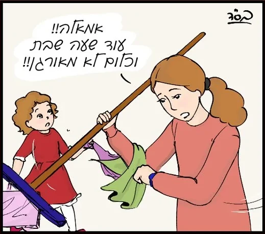
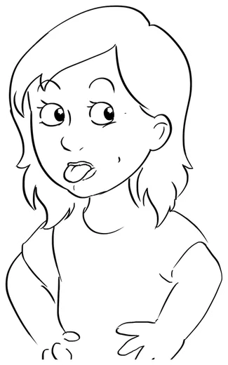
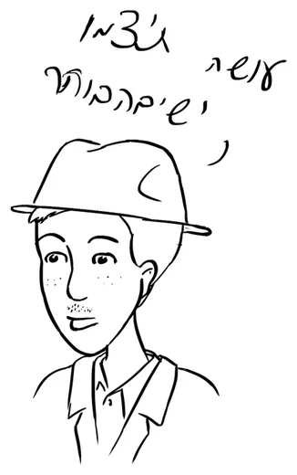
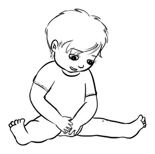
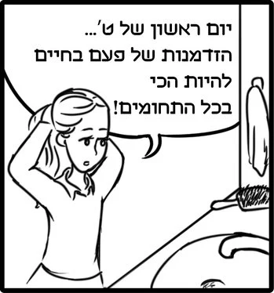
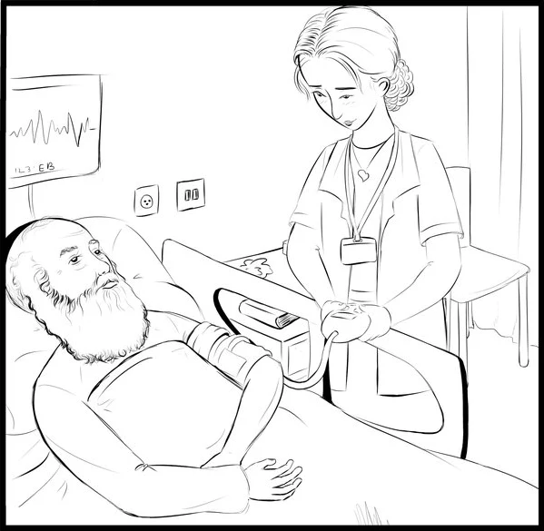
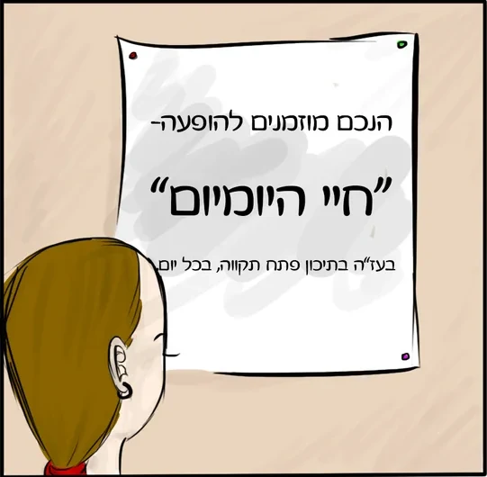

קומיקס שבת
קומיקס · עמוד אחד



בראשית
ליצור עולם בדיו
קומיקסים שכתבתי וציירתי. לחיצה על קומיקס פותחת אותו לקריאה, ובקומיקס של שני עמודים החץ מעביר לעמוד הבא.

קומיקס · עמוד אחד

קומיקס · 2 עמודים

קומיקס · עמוד אחד

קומיקס · 2 עמודים